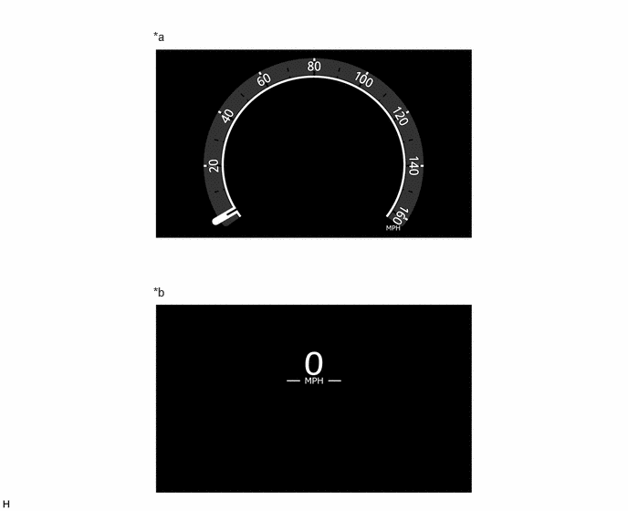

- A signal from the air conditioning amplifier assembly is processed and the outside air temperature is displayed.
- The displayed value is updated approximately every second.
| Last Modified: 10-07-2025 | 6.11:8.1.0 | Doc ID: NM100000002GRS4 |
| Model Year Start: 2024 | Model: Tacoma | Prod Date Range: [12/2023 - ] |
| Title: METER / GAUGE / DISPLAY: METER / GAUGE SYSTEM (Except Full Graphic): METER/GAUGE; 2024 - 2026 MY Tacoma Tacoma HV [12/2023 - ] | ||
METER/GAUGE
CONSTRUCTION
(a) Tachometer
(1) Displays the engine speed based on the signal transmitted from ECM.
(b) Speedometer
(1) Displays the vehicle speed based on the signal transmitted from skid control ECU.
(2) The speedometer is positioned in the LCD monitor, and the speedometer display can be switched between a digital or analog display via the "Settings" tab.
|
*a |
Analog Speedometer Display |
*b |
Digital Speedometer Display |
(c) Engine Coolant Temperature Gauge
(1) Displays the engine coolant temperature based on the signal transmitted from ECM.
(d) Fuel Gauge
(1) Normal Operation
- Displays the remaining amount of fuel and the drivable distance based on the value calculated by the meter ECU receiving the signal from fuel sender gauge assembly and ECM.
(2) Fuel Level Warning
- Illuminates the low fuel level warning when the fuel level is below the threshold.
(3) Fuel Refueling Process
- Refueling judgement processing is performed if refueling of 10 liters (2.6 gallon) or more is detected while the vehicle is stopped and the power source mode is turned ON.
(e) Shift Position Indicator
(1) Displays the current shift position based on the signal transmitted from ECM.
(f) ODO/TRIP Meter
(1) Displays the total and section mileage.
(2) Displays the odometer for a certain period of time after the power source is turned off.
(3) The item shown can be switched by pressing the ODO/TRIP switch.
ODO Meter
|
Display Range |
0 to 999999 km (miles) |
|
Function |
Displays 999999 km (miles) when there is a display overflow. |
TRIP Meter A/B
|
Display Range |
0.0 to 9999.9 km (miles) |
|
Function |
When there is a display overflow, the display returns to 0.0 km (mile) from 9999.9 km (miles) and the total continues. |
(g) Outside Temperature Gauge
(1) Displays the outside temperature.
(2) When the outside temperature drops below 3 °C (37 °F), an ice warning is displayed to warn the driver to drive with caution due to possibly icy road conditions.
Outside Temperature Gauge
|
Display Range |
-40 to 50 °C (-40 to 122°F) |
|
Function |
|
(3) Also displays the tab icon exclusively for a few seconds when the steering pad switch is operated.
(h) Clock
(1) Displays the current time.
(2) Displays for a certain period of time after the power source is turned off.
(i) Driving Support Function Constant Display (Models with Toyota Safety Sense)
(1) Displays the operating status of the following systems when the driving support system information tab is not displayed on the multi-information display:
- Dynamic Radar Cruise Control
- Lane Departure Alert (LDA)
- Lane Tracing Assist System (LTA)
(2) Also displays the power source status when the power source mode is turned ACC or ON (engine not started).
(j) Road Sign Icons (Models with RSA)
(1) Illuminates an icon in accordance with the road sign when the Road Sign Assist (RSA) detects a road sign.
(k) Rheostat
(1) A rheostat function which can be used to control the brightness of the meter panel is installed.
(2) The system is equipped with a function that varies the brightness depending on day/night judgment.
(3) Dimming is performed with the rheostat switch or multi-information display settings.
(l) Rear Seat Reminder
(1) A rear seat reminder is provided to prevent objects from being left in the rear seats.
NOTICE:
- Do not overly rely on this function as it is not a definitive reminder. For example, if an occupant moves from the front passenger seat to a rear seat, or similar situation, no reminder will be provided.
- As the system will assume that an occupant or object is on a rear seat if a rear door is opened then closed, in some situations, unnecessary reminders may be given depending on how the vehicle is used.
- If a higher priority notification is displayed on the multi-information display, the rear seat reminder will not be displayed.
(2) The function can be set ON/OFF using the settings screen on the multi-information display.